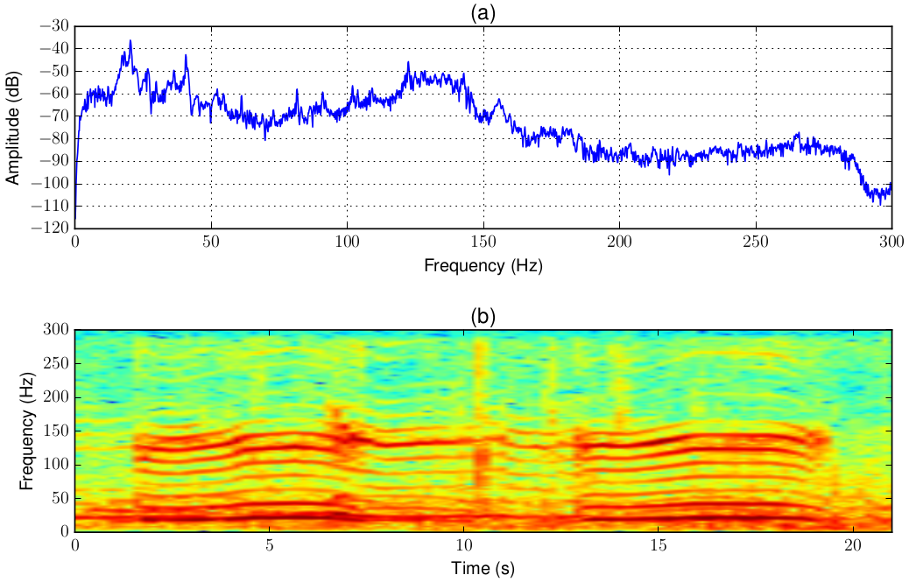
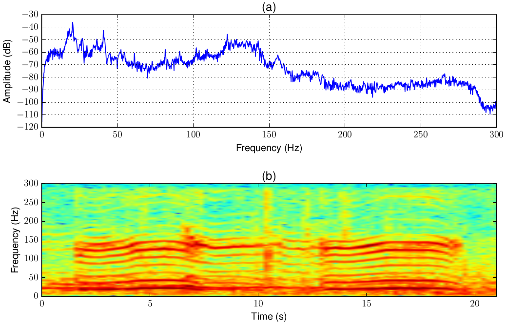

Passive Acoustic Monitoring
Wild animals are making various acoustic vocalisations. Among various animals, elephants are very important species in Sri Lanka who are well-known to generate low-frequency acoustic, i.e., infrasonic, vocalisations for their communication. Unlike the usual human audible frequencies, infrasonics are traveling long distances unobstructed by trees and other objects on the terrain. Due to this reason, infrasonic vocalisations of elephants can be used to monitor their presense and bahaviour from a safe distance. In the field of Passive Acoustic Monitoring (PAM), our work is on building low-cost hardware equipment that can capture infrasonics to support scientist working on elephant conservation and bahavioural studies.
 

Read more about this research area:
Chamath K. Silva, Vinuri Piyathilake, Chamath Keppitiyagama, Asanka P. Sayakkara, Prabash Kumarasinghe, Namal Jayasuriya, and Udayanga Sampath, "A Wavelet Transform-based Feature Extraction Pipeline for Elephant Rumble Detection", ICTer Journal, September Issue, 2023. [PDF]
Asanka Sayakkara, Namal Jayasuriya, Tharindu Ranathunga, Chathura Suduwella, Nithila Vithanage, Chamath Keppitiyagama, Kasun De Zoysa, Kasun Hewage and Thiemo Voigt. "Eloc: Locating Wild Elephants using Low-cost Infrasonic Detectors". In Proceedings of the International Conference on Distributed Computing on Sensor Systems, DCOSS 2017, Ottawa, Canada. (Best Paper Award) [PDF]
Poshitha Dabare, Chathura Suduwella, Asanka Sayakkara, Damitha Sandaruwan, Chamath Keppitiyagama, Kasun De Zoysa, Kasun Hewage, and Thiemo Voigt. "Listening to the Giants: Using Elephant Infra-Sound to Solve the Human-Elephant Conflict". In Proceedings of the 6th Workshop on Real World Wireless Sensor Networks, RealWSN 2015, Seoul, South Korea. [PDF]